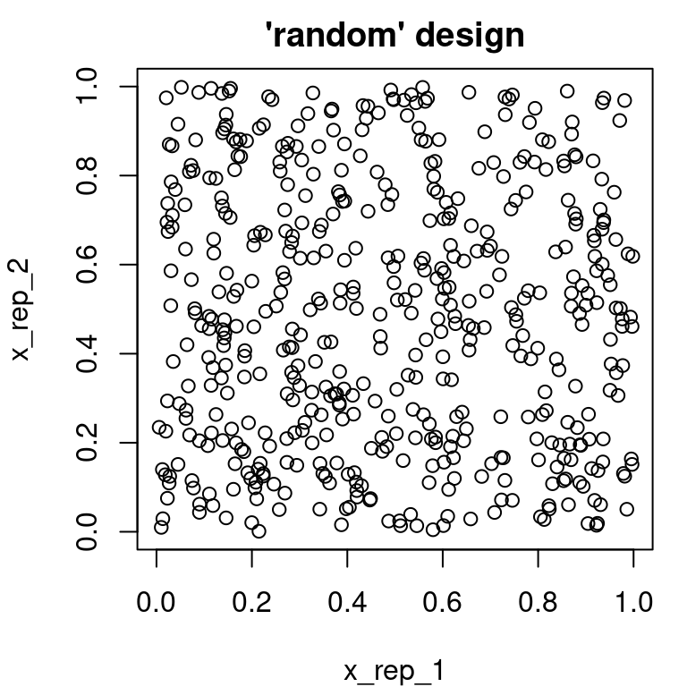

library("mlr3learners") # for the ranger learner
learner = lrn("classif.ranger")
learner$param_set$ids(tags = "threads")[1] "num.threads"![]()
This chapter provides an overview of the technical details of the mlr3 framework. This includes the following topics:
future framework (Section 9.1),Parallelization refers to running multiple jobs in parallel, i.e., executing them simultaneously on multiple CPU cores, CPUs, or computational nodes. This process allows for significant savings in computing power.
In general, there are many possibilities to parallelize, depending on the hardware to run the computations: If you only have a single CPU with multiple cores, threads or forks are ways to utilize all cores. If you have multiple machines, they need a way to communicate and exchange information, e.g. via protocols like network sockets or the Message Passing Interface (MPI). We don’t want to delve too deep into such details here, but want to introduce some terminology:
future package as an additional abstraction layer. mlr3 just interfaces future while the user can control how the code is executed.We distinguish between implicit parallelism and explicit parallelism. For the former, no special directives are required to enable the parallelization, everything works fully automatically. For the latter, parallelization has to be manually configured. On the one hand, this gives you full control over the execution, but on the other hand, this poses a greater obstacle for non-experts.
We don’t cover parallelization on GPUs here. mlr3 only distributes the fitting of multiple learners, e.g., during resampling, benchmarking, or tuning. On this rather abstract level, GPU parallelization doesn’t work efficiently. Some learning procedures can be compiled against CUDA/OpenCL to utilize the GPU while fitting a single model. We refer to the respective documentation of the learner’s implementation, e.g., here for xgboost.
We talk about implicit parallelization in the context of mlr3, if mlr3 calls external code (i.e., code from foreign CRAN packages which implements a Learner) that itself runs in parallel. Note that this definition includes GPU acceleration.
Many machine learning algorithms can parallelize their model fit using threading, e.g., the random forest implementation in ranger or the boosting implemented in xgboost. During threading, the implementation instructs some sequential parts of the code to be executed independently of the other parts in the same process.
For example, while fitting a decision tree, each split that divides the data into two disjoint partitions requires a search for the best cut point on all \(p\) features. So instead of iterating over all features sequentially, the search can be broken down into \(p\) threads, each searching for the best cut point on a single feature. These threads can easily be parallelized by the scheduler of the operating system, as there is no need for communication between the threads. After all threads have finished, the results are collected and merged before terminating the threads. I.e., for our example of the decision tree, (1) the \(p\) best cut points per feature are collected and then (2) aggregated to the single best cut point across all features by just iterating over the \(p\) results sequentially.
It does not make practical sense to actually execute in parallel every operation that can be parallelized. Starting and terminating workers (here: threads) as well as possible communication between workers comes at a price in the form of additionally required runtime which is called (parallelization) overhead. The overhead must be related to the runtime of the sequential execution. If the sequential execution is comparably fast, enabling parallelization often just introduces additional complexity and slows down the execution.
Unfortunately, threading conflicts with certain parallel backends used during explicit parallelization, causing the system to be overutilized in the best case and causing hangs or segfaults in the worst case. For this reason, we introduced the convention that implicit parallelization is turned off per default. Hyperparameters that control the number of threads are tagged with the label "threads". Currently, controlling the number of threads is possible for some learners and filters from the mlr3filters package:
library("mlr3learners") # for the ranger learner
learner = lrn("classif.ranger")
learner$param_set$ids(tags = "threads")[1] "num.threads"To enable the parallelization for this learner, we provide the helper function set_threads() which
<LearnerClassifRanger:classif.ranger>
* Model: -
* Parameters: num.threads=4
* Packages: mlr3, mlr3learners, ranger
* Predict Types: [response], prob
* Feature Types: logical, integer, numeric, character, factor, ordered
* Properties: hotstart_backward, importance, multiclass, oob_error,
twoclass, weights<LearnerClassifRanger:classif.ranger>
* Model: -
* Parameters: num.threads=2
* Packages: mlr3, mlr3learners, ranger
* Predict Types: [response], prob
* Feature Types: logical, integer, numeric, character, factor, ordered
* Properties: hotstart_backward, importance, multiclass, oob_error,
twoclass, weightsAutomatic detection of the number of CPUs is sometimes flaky, and utilizing all available cores is occasionally counterproductive as overburdening the system often has negative effects on the overall runtime. The function which determines the number of CPUs for mlr3 is implemented in parallelly::availableCores() and comes with reasonable heuristics for many setups. See this blog post for some background information about the heuristic. However, there are still some scenarios where it is better to reduce the number of utilized CPUs manually:
You can manually set the number of CPUs to overrule the heuristic via option "mc.cores":
We recommend setting this in your system’s .Rprofile file, c.f. Startup.
Here, we talk about explicit parallelization if mlr3 starts and controls the parallelization itself. For this purpose, an additional abstraction layer is used to be able to operate on a unified interface for a broad range of parallel backends: the future package. There are two operations where mlr3 calls the future package: while performing resampling via resample() and while benchmarking via benchmark(). During resampling, because all resampling iterations are independent of each other, all iterations can be executed in parallel. The same holds for benchmarking, where additionally to the independent model fits of a single resampling, all combinations in the provided design are also independent. These iterations are performed by future using the parallel backend configured with future::plan(). Extension packages like mlr3tuning internally call benchmark() during tuning and thus work in parallel, too.
When computational problems are so easy to parallelize, they are often referred to as “embarrassingly parallel”.
Whenever you loop over elements with a map-like function (e.g., lapply(), sapply(), mapply(), vapply() or a function from package purrr), you are facing an embarrassingly parallel problem. Such problems are straightforward to parallelize with R, e.g., with the furrr package providing map-like functions executed in parallel via the future framework. The same holds for for-loops with independent iterations, i.e., loops where the current iteration does not rely on the results of previous iterations.
In this section, we will use the spam task and a simple classification tree to showcase the explicit parallelization. We use the future::multisession parallel backend that should work on all systems.
By default, all CPUs of your machine are used unless you specify the argument workers in future::plan() (possible problems with this default have already been discussed for implicit parallelization). You should see a decrease in the reported elapsed time, but in practice, you cannot expect the runtime to fall linearly as the number of cores increases (Amdahl’s law). In contrast to threads, the technical overhead for starting workers, communicating objects, sending back results, and shutting down the workers is quite large for the multisession backend. Therefore, it is advised to only consider parallelization for resamplings where each iteration runs at least several seconds.
Figure 9.1 illustrates the parallelization from the above example. From left to right:
resample() function.ResampleResult.
graph LR
M[fa:fa-server Main]
S{"resample()"}
C{ResampleResult}
M --> S
S -->|Fold 1| W1[fa:fa-microchip Worker 1]
S -->|Fold 2| W2[fa:fa-microchip Worker 2]
S -->|Fold 3| W3[fa:fa-microchip Worker 3]
W1 -->|Prediction 1| C
W2 -->|Prediction 2| C
W3 -->|Prediction 3| C
If you are transitioning from mlr, you might be used to selecting different parallelization levels, e.g., for resampling, benchmarking, or tuning. In mlr3, this is no longer required (except for nested resampling, briefly described in the following section). All kind of experiments are rolled out on the same level. Therefore, there is no need to decide whether you want to parallelize the tuning OR the resampling.
Just lean back and let the machine do the work :-)
Usually reproducibility is a major concern during parallelization as special pseudorandom number generators (PRNGs) are required. Luckily, this problem is already solved for us by the excellent future package mlr3 calls under the hood. future ensures that all workers will receive the exactly same PRNG streams. Although this alone does not guarantee full reproducibility, it is one problem less to worry about.
You can find more details about the used pseudo RNG in this blog post.
Nested resampling results in two nested resampling loops, and the user can choose which of them should be parallelized. Let’s consider the following example: You want to tune the minsplit argument of a classification tree using the AutoTuner of mlr3tuning (simplified version taken from the nested resampling section):
Loading required package: paradoxTo evaluate the performance on an independent test set, resampling is used:
<ResampleResult> of 5 iterations
* Task: penguins
* Learner: classif.rpart.tuned
* Warnings: 0 in 0 iterations
* Errors: 0 in 0 iterationsHere, we have two opportunities to tune: the inner cross-validation of the auto tuner with 2 folds, or the outer cross-validation of the resampling with 5 folds. Let’s say that we have a single CPU with four cores available.
If we opt to parallelize the outer CV, all four cores would be utilized first with the computation of the first 4 resampling iterations. The computation of the fifth iteration has to wait, i.e., depending on the parallelization backend and its scheduling strategy,
The former method usually comes with less synchronization overhead and is best suited for short jobs with homogeneous runtimes. The latter yields better runtimes if the runtimes are heterogeneous, especially if the parallelization overhead is neglectable in comparison with the runtime for the computation. E.g., for parallel::mclapply(), the behavior of the scheduler can be controlled with the mc.preschedule option. For many backends, you cannot control the scheduling. However, future allows you to first chunk jobs together which combines multiple tasks into blocks that run sequentially on a worker, avoiding the intermediate synchronization steps.
The resulting CPU utilization of the nested resampling example on 4 CPUs is visualized in two Figures:
Figure 9.2 as an example for parallelizing the outer 5-fold cross-validation.
We assume that each fit during the inner resampling takes 4 seconds to compute and that there is no other significant overhead. First, each of the four workers starts with the computation of an inner 2-fold cross-validation. As there are more jobs than workers, the remaining fifth iteration of the outer resampling is queued on CPU1 after the first 4 iterations are finished after 8 secs. During the computation of the 5th outer resampling iteration, only CPU1 is utilized, the other 3 CPUs are idling.
Figure 9.3 as an example for parallelizing the inner 2-fold cross-validation.
Here, the outer loop runs sequentially and distributes the 2 computations for the inner resampling on 2 CPUs. Meanwhile, CPU3 and CPU4 are idling.
gantt
title CPU Utilization
dateFormat s
axisFormat %S
section CPU1
Iteration 1-1 :0, 4s
Iteration 1-2 :4, 4s
Iteration 5-1 :8, 4s
Iteration 5-2 :12, 4s
section CPU2
Iteration 2-1 :0, 4s
Iteration 2-2 :4, 4s
Idle :crit, 8, 8s
section CPU3
Iteration 3-1 :0, 4s
Iteration 3-2 :4, 4s
Idle :crit, 8, 8s
Iteration 4-1 :0, 4s
section CPU4
Iteration 4-2 :4, 4s
Idle :crit, 8, 8s
gantt
title CPU Utilization
dateFormat s
axisFormat %S
section CPU1
Iteration 1-1 :0, 4s
Iteration 2-1 :4, 4s
Iteration 3-1 :8, 4s
Iteration 4-1 :12, 4s
Iteration 5-1 :16, 4s
section CPU2
Iteration 1-2 :0, 4s
Iteration 2-2 :4, 4s
Iteration 3-2 :8, 4s
Iteration 4-2 :12, 4s
Iteration 5-2 :16, 4s
section CPU3
Idle :crit, 0, 20s
section CPU4
Idle :crit, 0, 20s
Both possibilities for parallelization are not exploiting the full potential of the 4 CPUs. With parallelization of the outer loop, all results are computed after 16s, in contrast to parallelization of the inner loop where the results are only available after 20s.
If possible, the number of iterations can be adapted to the available hardware. There is no law set in stone that you have to do, e.g., 10 folds in cross-validation. If you have 4 CPUs and a reasonable variance, 8 iterations are often sufficient, or you do 12 iterations because you get the last two iterations basically for free.
Alternatively, you can also enable parallelization for both loops for nested parallelization, even on different parallelization backends. While nesting real parallelization backends is often unintended and causes unnecessary overhead, it is useful in some distributed computing setups. In this case, the number of workers must be manually tweaked so that the system does not get overburdened:
This example would run on 8 cores (= 2 * 4) on the local machine. The vignette of the future package gives more insight into nested parallelization. For more background information about parallelization during tuning, see Section 6.7 of Bischl et al. (2021).
During tuning with mlr3tuning, you can often adjust the batch size of the Tuner, i.e., control how many hyperparameter configurations are evaluated in parallel. If you want full parallelization, make sure that the batch size multiplied by the number of (inner) resampling iterations is at least equal to the number of available workers. If you expect homogeneous runtimes, i.e., you are tuning over a single learner or linear pipeline and you have no hyperparameter which is likely to influence the performance, aim for a multiple of the number of workers.
In general, larger batches mean more parallelization, while smaller batches imply a more frequent evaluation of termination criteria. We default to a batch_size of 1 that ensures that all Terminators work as intended, i.e., you cannot exceed the computational budget.
In ML, it is not uncommon for something to break. This is because the algorithms have to process arbitrary data, and not all eventualities can always be handled. While we try to identify obvious problems before execution, such as when missing values occur, but a learner can’t handle them, other problems are far more complex to detect. Examples include correlations or collinearity that make model fitting impossible, outliers that lead to numerical problems, or new levels of categorical variables emerging in the predict step. The learners behave quite differently when encountering such problems: some models signal a warning during the train step that they failed to fit but return a baseline model while other models stop the execution. During prediction, some learners just refuse to predict the response for observations they cannot handle while others predict a missing value. How to deal with these problems even in more complex setups like benchmarking or tuning is the topic of this section.
For illustration (and internal testing) of error handling, mlr3 ships with the learners classif.debug and regr.debug. Here, we will concentrate on the debug learner for classification:
<LearnerClassifDebug:classif.debug>: Debug Learner for Classification
* Model: -
* Parameters: list()
* Packages: mlr3
* Predict Types: [response], prob
* Feature Types: logical, integer, numeric, character, factor, ordered
* Properties: hotstart_forward, missings, multiclass, twoclassThis learner comes with special hyperparameters that let us simulate problems frequently encountered in ML. E.g., the debug learner comes with hyperparameters to control
NA (predict_missing).<ParamSet>
id class lower upper nlevels default value
1: error_predict ParamDbl 0 1 Inf 0
2: error_train ParamDbl 0 1 Inf 0
3: message_predict ParamDbl 0 1 Inf 0
4: message_train ParamDbl 0 1 Inf 0
5: predict_missing ParamDbl 0 1 Inf 0
6: predict_missing_type ParamFct NA NA 2 na
7: save_tasks ParamLgl NA NA 2 FALSE
8: segfault_predict ParamDbl 0 1 Inf 0
9: segfault_train ParamDbl 0 1 Inf 0
10: sleep_train ParamUty NA NA Inf <NoDefault[3]>
11: sleep_predict ParamUty NA NA Inf <NoDefault[3]>
12: threads ParamInt 1 Inf Inf <NoDefault[3]>
13: warning_predict ParamDbl 0 1 Inf 0
14: warning_train ParamDbl 0 1 Inf 0
15: x ParamDbl 0 1 Inf <NoDefault[3]>
16: iter ParamInt 1 Inf Inf 1 With the learner’s default settings, the learner will do nothing special: The learner remembers a random label and constantly predicts this label:
truth
response Adelie Chinstrap Gentoo
Adelie 0 0 0
Chinstrap 0 0 0
Gentoo 152 68 124We now set a hyperparameter to let the debug learner signal an error during the train step. By default, mlr3 does not catch conditions such as warnings or errors raised while calling learners:
# set probability to signal an error to 1
learner$param_set$values = list(error_train = 1)
learner$train(tsk("penguins"))Error in .__LearnerClassifDebug__.train(self = self, private = private, : Error from classif.debug->train()If this has been a regular learner, we could now start debugging with traceback() (or create a Minimal Reproducible Example (MRE) to file a bug report upstream).
If you start debugging, make sure you have disabled parallelization to avoid various pitfalls related to parallelization. It may also be helpful to set the option mlr3.debug to TRUE. If this flag is set, mlr3 does not call into the future package, resulting in an easier-to-interpret program flow and traceback().
Since ML algorithms are confronted with arbitrary, often messy data, errors are not uncommon here, and we often just need to move on during benchmarking or tuning. Thus, we need a mechanism to
Encapsulation ensures that signaled conditions (such as messages, warnings and errors) are intercepted: all conditions raised during the training or predict step are logged into the learner, and errors do not interrupt the program flow. I.e., the execution of the calling function or package (here: mlr3) continues as if there had been no error, though the result (fitted model during train(), predictions during predict()) are missing. Each Learner has a field encapsulate to control how the train or predict steps are wrapped. The easiest way to encapsulate the execution is provided by the package evaluate which evaluates R expressions while tracking conditions such as outputs, messages, warnings or errors (see the documentation of the encapsulate() helper function for more details):
task = tsk("penguins")
learner = lrn("classif.debug")
# this learner throws a warning and then stops with an error during train()
learner$param_set$values = list(warning_train = 1, error_train = 1)
# enable encapsulation for train() and predict()
learner$encapsulate = c(train = "evaluate", predict = "evaluate")
learner$train(task)After training the learner, one can access the recorded log via the fields log, warnings and errors:
stage class msg
1: train warning Warning from classif.debug->train()
2: train error Error from classif.debug->train()[1] "Warning from classif.debug->train()"[1] "Error from classif.debug->train()"Another method for encapsulation is implemented in the callr package. In contrast to evaluate, the computation is taken out in a separate R process. This guards the calling session against segfaults which otherwise would tear down the complete R session. On the downside, starting new processes comes with comparably more computational overhead.
learner$encapsulate = c(train = "callr", predict = "callr")
learner$param_set$values = list(segfault_train = 1)
learner$train(task = task)
learner$errors[1] "callr process exited with status -11"With either of these encapsulation methods, we can now catch errors and post-hoc analyze the messages, warnings and error messages. Unfortunately, this is only half the battle. Without a model, it is not possible to get predictions:
To handle the missing predictions gracefully during resample(), benchmark() or tuning, fallback learners are introduced next.
Fallback learners have the purpose of allowing scoring results in cases where a Learner failed to fit a model, refuses to provide predictions for all observations or predicts missing values.
We will first handle the case that a learner fails to fit a model during training, e.g., if some convergence criterion is not met or the learner ran out of memory. There are in general three possibilities to proceed:
Measure) and thereby heavily penalize the learner for failing. However, this often seems too harsh for many problems, and for some measures there is no reasonable value to impute.mlr_learners_classif.featureless or mlr_learners_regr.featureless). Note that a reasonable baseline value is different in different training splits. Retrieving these values after a larger benchmark study has been conducted is possible, but tedious.We strongly recommend option (3): it is statistically sound and very flexible. To make this procedure very convenient during resampling and benchmarking, we support fitting a proper baseline with a fallback learner. In the next example, in addition to the debug learner, we attach a simple featureless learner to the debug learner. So whenever the debug learner fails (which is every single time with the given parametrization) and encapsulation is enabled, mlr3 falls back to the predictions of the featureless learner internally:
task = tsk("penguins")
learner = lrn("classif.debug")
learner$param_set$values = list(error_train = 1)
learner$fallback = lrn("classif.featureless")
learner$train(task)
learner<LearnerClassifDebug:classif.debug>: Debug Learner for Classification
* Model: -
* Parameters: error_train=1
* Packages: mlr3
* Predict Types: [response], prob
* Feature Types: logical, integer, numeric, character, factor, ordered
* Properties: hotstart_forward, missings, multiclass, twoclass
* Errors: Error from classif.debug->train()Note that we don’t have to enable encapsulation explicitly; it is automatically set to "evaluate" for the training and the predict step while setting a fallback learner for a learner without encapsulation enabled. Furthermore, the log contains the captured error (which is also included in the print output), and although we don’t have a model, we can still get predictions:
In this stepwise train-predict procedure, the fallback learner is of limited use. However, it is invaluable for larger benchmark studies.
In the following snippet, we compare the previously created debug learner with a simple classification tree. We re-parametrize the debug learner to fail in roughly 30% of the resampling iterations during the training step:
learner$param_set$values = list(error_train = 0.3)
bmr = benchmark(benchmark_grid(tsk("penguins"), list(learner, lrn("classif.rpart")), rsmp("cv")))
aggr = bmr$aggregate(conditions = TRUE)
aggr[, .(learner_id, warnings, errors, classif.ce)] learner_id warnings errors classif.ce
1: classif.debug 0 8 0.56915966
2: classif.rpart 0 0 0.06403361Even though the debug learner occasionally failed to provide predictions, we still got a statistically sound aggregated performance value which we can compare to the aggregated performance of the classification tree. It is also possible to split the benchmark up into separate ResampleResult objects which sometimes helps to get more context. E.g., if we only want to have a closer look into the debug learner, we can extract the errors from the corresponding resample results:
iteration msg
1: 1 Error from classif.debug->train()
2: 4 Error from classif.debug->train()
3: 5 Error from classif.debug->train()
4: 6 Error from classif.debug->train()
5: 7 Error from classif.debug->train()
6: 8 Error from classif.debug->train()
7: 9 Error from classif.debug->train()
8: 10 Error from classif.debug->train()A similar problem to failed model fits emerges when a learner predicts only a subset of the observations in the test set (and predicts NA or no value for others). A typical case is, e.g., when new and unseen factor levels are encountered in the test data. Imagine again that our goal is to benchmark two algorithms using cross-validation on some binary classification task:
Clearly, at its core, this is the same problem as outlined before. Algorithm B would easily outperform algorithm A, but you have not factored in that you can not generate predictions for all observations. Long story short, if a fallback learner is involved, missing predictions of the base learner will be automatically replaced with predictions from the fallback learner. This is illustrated in the following example:
task = tsk("penguins")
learner = lrn("classif.debug")
# this hyperparameter sets the ratio of missing predictions
learner$param_set$values = list(predict_missing = 0.5)
# without fallback
p = learner$train(task)$predict(task)
table(p$response, useNA = "always")
Adelie Chinstrap Gentoo <NA>
172 0 0 172 # with fallback
learner$fallback = lrn("classif.featureless")
p = learner$train(task)$predict(task)
table(p$response, useNA = "always")
Adelie Chinstrap Gentoo <NA>
172 0 172 0 Summed up, by combining encapsulation and fallback learners, it is possible to benchmark even quite unreliable or unstable learning algorithms in a convenient and statistically sound fashion.
All problems demonstrated so far are artificial and non-actionable. The usefulness of encapsulation and error logging usually only really becomes apparent in large benchmarks, especially in combination with parallelization. For a fair comparison, you need to distinguish between the following cases:
The package mlr3batchmark provides functionality to map jobs of a benchmark to computational jobs for the package batchtools. This provides a convenient way get fine-grained control over the execution of each single resampling iteration and then combine the results afterwards to a BenchmarkResult again to proceed with the analysis.
In mlr3, Tasks store their data in an abstract data object, the DataBackend. A backend provides a unified API to retrieve subsets of the data or query information about it, regardless of how the data is actually stored. The default backend uses data.table via the DataBackendDataTable as a very fast and efficient in-memory database. For example, we can query some information of the mlr_tasks_penguins task:
For bigger data, or when working with many tasks simultaneously in the same R session, it can be necessary to interface out-of-memory data to reduce the memory requirements. This way, only the part of the data which is currently required by the learners will be placed in the main memory to operate on. There are multiple options to archive this:
DataBackendDplyr which interfaces the R package dbplyr, extending dplyr to work on many popular databases like MariaDB, PostgreSQL or SQLite.DataBackendDuckDB for the impressive DuckDB database connected via duckdb: a fast, zero-configuration alternative to SQLite.DataBackendDuckDB, again, but for Parquet files. The data does not need to be converted to DuckDB’s native storage format, you can work directly on directories containing one or multiple files stored in the popular Parquet format.To demonstrate the DataBackendDplyr we use the NYC flights data set from the nycflights13 package and move it into a SQLite database. Although as_sqlite_backend() provides a convenient function to perform this step, we construct the database manually here.
# load data
requireNamespace("DBI")
requireNamespace("RSQLite")
requireNamespace("nycflights13")
data("flights", package = "nycflights13")
str(flights)tibble [336,776 × 19] (S3: tbl_df/tbl/data.frame)
$ year : int [1:336776] 2013 2013 2013 2013 2013 2013 2013 2013 2013 2013 ...
$ month : int [1:336776] 1 1 1 1 1 1 1 1 1 1 ...
$ day : int [1:336776] 1 1 1 1 1 1 1 1 1 1 ...
$ dep_time : int [1:336776] 517 533 542 544 554 554 555 557 557 558 ...
$ sched_dep_time: int [1:336776] 515 529 540 545 600 558 600 600 600 600 ...
$ dep_delay : num [1:336776] 2 4 2 -1 -6 -4 -5 -3 -3 -2 ...
$ arr_time : int [1:336776] 830 850 923 1004 812 740 913 709 838 753 ...
$ sched_arr_time: int [1:336776] 819 830 850 1022 837 728 854 723 846 745 ...
$ arr_delay : num [1:336776] 11 20 33 -18 -25 12 19 -14 -8 8 ...
$ carrier : chr [1:336776] "UA" "UA" "AA" "B6" ...
$ flight : int [1:336776] 1545 1714 1141 725 461 1696 507 5708 79 301 ...
$ tailnum : chr [1:336776] "N14228" "N24211" "N619AA" "N804JB" ...
$ origin : chr [1:336776] "EWR" "LGA" "JFK" "JFK" ...
$ dest : chr [1:336776] "IAH" "IAH" "MIA" "BQN" ...
$ air_time : num [1:336776] 227 227 160 183 116 150 158 53 140 138 ...
$ distance : num [1:336776] 1400 1416 1089 1576 762 ...
$ hour : num [1:336776] 5 5 5 5 6 5 6 6 6 6 ...
$ minute : num [1:336776] 15 29 40 45 0 58 0 0 0 0 ...
$ time_hour : POSIXct[1:336776], format: "2013-01-01 05:00:00" "2013-01-01 05:00:00" ...# add column of unique row ids
flights$row_id = 1:nrow(flights)
# create sqlite database in temporary file
path = tempfile("flights", fileext = ".sqlite")
con = DBI::dbConnect(RSQLite::SQLite(), path)
tbl = DBI::dbWriteTable(con, "flights", as.data.frame(flights))
DBI::dbDisconnect(con)
# remove in-memory data
rm(flights)With the SQLite database stored in file path, we now re-establish a connection and switch to dplyr/dbplyr for some essential preprocessing.
# establish connection
con = DBI::dbConnect(RSQLite::SQLite(), path)
# select the "flights" table, enter dplyr
library("dplyr")
Attaching package: 'dplyr'The following objects are masked from 'package:data.table':
between, first, lastThe following objects are masked from 'package:stats':
filter, lagThe following objects are masked from 'package:base':
intersect, setdiff, setequal, union
Attaching package: 'dbplyr'The following objects are masked from 'package:dplyr':
ident, sqlFirst, we select a subset of columns to work on:
Additionally, we remove those observations where the arrival delay (arr_delay) has a missing value:
To keep runtime reasonable for this toy example, we filter the data to only use every second row:
The factor levels of the feature carrier are merged so that infrequent carriers are replaced by level “other”:
Next, the processed table is used to create a mlr3db::DataBackendDplyr from mlr3db:
We can now use the interface of DataBackend to query some basic information about the data:
[1] 163707[1] 13 row_id year month day hour minute dep_time arr_time carrier flight air_time
1: 2 2013 1 1 5 29 533 850 UA 1714 227
2: 4 2013 1 1 5 45 544 1004 B6 725 183
3: 6 2013 1 1 5 58 554 740 UA 1696 150
4: 8 2013 1 1 6 0 557 709 EV 5708 53
5: 10 2013 1 1 6 0 558 753 AA 301 138
6: 12 2013 1 1 6 0 558 853 B6 71 158
2 variables not shown: [distance, arr_delay]Note that the DataBackendDplyr does not know about any rows or columns we have filtered out with dplyr before, it just operates on the view we provided.
As we now have constructed a backend, we can switch over to mlr3 for model fitting and create the following mlr3 objects:
regression task, based on the previously created mlr3db::DataBackendDplyr.regr.rpart).subsampling”)mse”, “time_train” and “time_predict”We pass all these objects to resample() to perform a simple resampling with three iterations. In each iteration, only the required subset of the data is queried from the SQLite database and passed to rpart::rpart():
<ResampleResult> of 3 iterations
* Task: flights_sqlite
* Learner: regr.rpart
* Warnings: 0 in 0 iterations
* Errors: 0 in 0 iterations regr.mse time_train time_predict
1246.076751 0.295000 2.017333 Note that we still have an active connection to the database. To properly close it, we remove the tbl object referencing the connection and then close the connection.
While storing the Task’s data in memory is most efficient w.r.t. accessing it for model fitting, this has two major disadvantages:
A very simple way to avoid this is given by just converting the DataBackendDataTable to a DataBackendDuckDB. As we have already demonstrated how to operate on a SQLite database, and DuckDB is not different in that regard. To convert a data.frame to DuckDB, we provide the helper function as_duckdb_backend(). Only two arguments are required: the data.frame to convert, and a path to store the data.
While this is useful while working with many tasks simultaneously in order to keep the memory requirements reasonable, the more frequent use case for DuckDB are nowadays Parquet files. Parquet is a popular column-oriented data storage format supporting efficient compression, making it far superior to other popular data exchange formats such as CSV.
To demonstrate working with Parquet files, we first query the location of an example data set shipped with mlr3db:
We can then create a DataBackendDuckDB based on this file and convert the backend to a classification task, all without loading the dataset into memory:
<TaskClassif:backend> (4601 x 58)
* Target: type
* Properties: twoclass
* Features (57):
- dbl (57): address, addresses, all, business, capitalAve,
capitalLong, capitalTotal, charDollar, charExclamation, charHash,
charRoundbracket, charSemicolon, charSquarebracket, conference,
credit, cs, data, direct, edu, email, font, free, george, hp, hpl,
internet, lab, labs, mail, make, meeting, money, num000, num1999,
num3d, num415, num650, num85, num857, order, original, our, over,
parts, people, pm, project, re, receive, remove, report, table,
technology, telnet, will, you, yourAccessing the data internally triggers a query and data is fetched to be stored in an in-memory data.frame, but only the required subsets.
We are currently revising the book. This section contains a lot of legacy code. You can find the new paradox syntax in the Defining a Tuning Spaces section.
The paradox package offers a language for the description of parameter spaces, as well as tools for useful operations on these parameter spaces. A parameter space is often useful when describing:
The tools provided by paradox therefore relate to:
paradox is, by nature, an auxiliary package that derives its usefulness from other packages that make use of it. It is heavily utilized in other mlr-org packages such as mlr3, mlr3pipelines, and mlr3tuning.
paradox is the spiritual successor to the ParamHelpers package and was written from scratch using the R6 class system. The most important consequence of this is that all objects created in paradox are “reference-based”, unlike most other objects in R. When a change is made to a ParamSet object, for example by adding a parameter using the $add() function, all variables that point to this ParamSet will contain the changed object. To create an independent copy of a ParamSet, the $clone() method needs to be used:
library("paradox")
ps = ParamSet$new()
ps2 = ps
ps3 = ps$clone(deep = TRUE)
print(ps) # the same for ps2 and ps3<ParamSet>
Empty.<ParamSet>
id class lower upper nlevels default value
1: a ParamLgl NA NA 2 <NoDefault[3]> <ParamSet>
id class lower upper nlevels default value
1: a ParamLgl NA NA 2 <NoDefault[3]> <ParamSet>
Empty.The basic building block for describing parameter spaces is the Param class. It represents a single parameter, which usually can take a single atomic value. Consider, for example, trying to configure the rpart package’s rpart.control object. It has various components (minsplit, cp, …) that all take a single value, and that would all be represented by a different instance of a Param object.
The Param class has various subclasses that represent different value types:
ParamInt: Integer numbersParamDbl: Real numbersParamFct: String values from a set of possible values, similar to R factorsParamLgl: Truth values (TRUE / FALSE), as logicals in RParamUty: Parameter that can take any valueA particular instance of a parameter is created by calling the attached $new() function:
library("paradox")
parA = ParamLgl$new(id = "A")
parB = ParamInt$new(id = "B", lower = 0, upper = 10, tags = c("tag1", "tag2"))
parC = ParamDbl$new(id = "C", lower = 0, upper = 4, special_vals = list(NULL))
parD = ParamFct$new(id = "D", levels = c("x", "y", "z"), default = "y")
parE = ParamUty$new(id = "E", custom_check = function(x) checkmate::checkFunction(x))Every parameter must have:
The numeric (Int and Dbl) parameters furthermore allow for specification of a lower and upper bound. Meanwhile, the Fct parameter must be given a vector of levels that define the possible states its parameter can take. The Uty parameter can also have a custom_check function that must return TRUE when a value is acceptable and may return a character(1) error description otherwise. The example above defines parE as a parameter that only accepts functions.
All values which are given to the constructor are then accessible from the object for inspection using $. Although all these values can be changed for a parameter after construction, this can be a bad idea and should be avoided when possible.
Instead, a new parameter should be constructed. Besides the possible values that can be given to a constructor, there are also the $class, $nlevels, $is_bounded, $has_default, $storage_type, $is_number and $is_categ slots that give information about a parameter.
A list of all slots can be found in ?Param.
It is also possible to get all information of a Param as data.table by calling as.data.table().
id class lower upper levels nlevels is_bounded special_vals
1: A ParamLgl NA NA TRUE,FALSE 2 TRUE <list[0]>
3 variables not shown: [default, storage_type, tags]A Param object offers the possibility to check whether a value satisfies its condition, i.e. is of the right type, and also falls within the range of allowed values, using the $test(), $check(), and $assert() functions. test() should be used within conditional checks and returns TRUE or FALSE, while check() returns an error description when a value does not conform to the parameter (and thus plays well with the "checkmate::assert()" function). assert() will throw an error whenever a value does not fit.
[1] TRUE[1] FALSE[1] "Must be of type 'logical flag', not 'character'"Instead of testing single parameters, it is often more convenient to check a whole set of parameters using a ParamSet.
The ordered collection of parameters is handled in a ParamSet1. It is initialized using the $new() function and optionally takes a list of Params as argument. Parameters can also be added to the constructed ParamSet using the $add() function. It is even possible to add whole ParamSets to other ParamSets.
1 Although the name is suggestive of a “Set”-valued Param, this is unrelated to the other objects that follow the ParamXxx naming scheme.
<ParamSet>
id class lower upper nlevels default value
1: A ParamLgl NA NA 2 <NoDefault[3]>
2: B ParamInt 0 10 11 <NoDefault[3]>
3: C ParamDbl 0 4 Inf <NoDefault[3]>
4: D ParamFct NA NA 3 y
5: E ParamUty NA NA Inf <NoDefault[3]> The individual parameters can be accessed through the $params slot. It is also possible to get information about all parameters in a vectorized fashion using mostly the same slots as for individual Params (i.e. $class, $levels etc.), see ?ParamSet for details.
It is possible to reduce ParamSets using the $subset method. Be aware that it modifies a ParamSet in-place, so a “clone” must be created first if the original ParamSet should not be modified.
<ParamSet>
id class lower upper nlevels default value
1: A ParamLgl NA NA 2 <NoDefault[3]>
2: B ParamInt 0 10 11 <NoDefault[3]>
3: C ParamDbl 0 4 Inf <NoDefault[3]> Just as for Params, and much more useful, it is possible to get the ParamSet as a data.table using as.data.table(). This makes it easy to subset parameters on certain conditions and aggregate information about them, using the variety of methods provided by data.table.
id class lower upper levels nlevels is_bounded special_vals
1: A ParamLgl NA NA TRUE,FALSE 2 TRUE <list[0]>
2: B ParamInt 0 10 11 TRUE <list[0]>
3: C ParamDbl 0 4 Inf TRUE <list[1]>
4: D ParamFct NA NA x,y,z 3 TRUE <list[0]>
5: E ParamUty NA NA Inf FALSE <list[0]>
3 variables not shown: [default, storage_type, tags]Similar to individual Params, the ParamSet provides $test(), $check() and $assert() functions that allow for type and range checking of parameters. Their argument must be a named list with values that are checked against the respective parameters. It is possible to check only a subset of parameters.
ParamSet
Although a ParamSet fundamentally represents a value space, it also has a slot $values that can contain a point within that space. This is useful because many things that define a parameter space need similar operations (like parameter checking) that can be simplified. The $values slot contains a named list that is always checked against parameter constraints. When trying to set parameter values, e.g. for mlr3 Learners, it is the $values slot of its $param_set that needs to be used.
The parameter constraints are automatically checked:
It is often the case that certain parameters are irrelevant or should not be given depending on values of other parameters. An example would be a parameter that switches a certain algorithm feature (for example regularization) on or off, combined with another parameter that controls the behavior of that feature (e.g. a regularization parameter). The second parameter would be said to depend on the first parameter having the value TRUE.
A dependency can be added using the $add_dep method, which takes both the ids of the “depender” and “dependee” parameters as well as a Condition object. The Condition object represents the check to be performed on the “dependee”. Currently it can be created using CondEqual$new() and CondAnyOf$new(). Multiple dependencies can be added, and parameters that depend on others can again be depended on, as long as no cyclic dependencies are introduced.
The consequence of dependencies are twofold: For one, the $check(), $test() and $assert() tests will not accept the presence of a parameter if its dependency is not met. Furthermore, when sampling or creating grid designs from a ParamSet, the dependencies will be respected (see Parameter Sampling, in particular Hierarchical Sampler).
The following example makes parameter D depend on parameter A being FALSE, and parameter B depend on parameter D being one of "x" or "y". This introduces an implicit dependency of B on A being FALSE as well, because D does not take any value if A is TRUE.
[1] TRUE[1] "The parameter 'B' can only be set if the following condition is met 'D ∈ {x, y}'. Instead the current parameter value is: D=z"[1] "The parameter 'B' can only be set if the following condition is met 'D ∈ {x, y}'. Instead the parameter value for 'D' is not set at all. Try setting 'D' to a value that satisfies the condition"[1] TRUE[1] TRUE[1] "The parameter 'D' can only be set if the following condition is met 'A = FALSE'. Instead the current parameter value is: A=TRUE"[1] "The parameter 'B' can only be set if the following condition is met 'D ∈ {x, y}'. Instead the parameter value for 'D' is not set at all. Try setting 'D' to a value that satisfies the condition"Internally, the dependencies are represented as a data.table, which can be accessed listed in the $deps slot. This data.table can even be mutated, to e.g. remove dependencies. There are no sanity checks done when the $deps slot is changed this way. Therefore it is advised to be cautious.
Unlike in the old ParamHelpers package, there are no more vectorial parameters in paradox. Instead, it is now possible to create multiple copies of a single parameter using the $rep function. This creates a ParamSet consisting of multiple copies of the parameter, which can then (optionally) be added to another ParamSet.
<ParamSet>
id class lower upper nlevels default value
1: x_rep_1 ParamDbl 0 1 Inf <NoDefault[3]>
2: x_rep_2 ParamDbl 0 1 Inf <NoDefault[3]> <ParamSet>
id class lower upper nlevels default parents value
1: A ParamLgl NA NA 2 <NoDefault[3]> TRUE
2: B ParamInt 0 10 11 <NoDefault[3]> D 1
3: C ParamDbl 0 4 Inf <NoDefault[3]>
4: D ParamFct NA NA 3 y A
5: E ParamUty NA NA Inf <NoDefault[3]>
6: x_rep_1 ParamDbl 0 1 Inf <NoDefault[3]>
7: x_rep_2 ParamDbl 0 1 Inf <NoDefault[3]> It is also possible to use a ParamUty to accept vectorial parameters, which also works for parameters of variable length. A ParamSet containing a ParamUty can be used for parameter checking, but not for sampling. To sample values for a method that needs a vectorial parameter, it is advised to use a parameter transformation function that creates a vector from atomic values.
Assembling a vector from repeated parameters is aided by the parameter’s $tags: Parameters that were generated by the $rep() command automatically get tagged as belonging to a group of repeated parameters.
It is often useful to have a list of possible parameter values that can be systematically iterated through, for example to find parameter values for which an algorithm performs particularly well (tuning). paradox offers a variety of functions that allow creating evenly-spaced parameter values in a “grid” design as well as random sampling. In the latter case, it is possible to influence the sampling distribution in more or less fine detail.
A point to always keep in mind while sampling is that only numerical and factorial parameters that are bounded can be sampled from, i.e. not ParamUty. Furthermore, for most samplers ParamInt and ParamDbl must have finite lower and upper bounds.
Functions that sample the parameter space fundamentally return an object of the Design class. These objects contain the sampled data as a data.table under the $data slot, and also offer conversion to a list of parameter-values using the $transpose() function.
The generate_design_grid() function is used to create grid designs that contain all combinations of parameter values: All possible values for ParamLgl and ParamFct, and values with a given resolution for ParamInt and ParamDbl. The resolution can be given for all numeric parameters, or for specific named parameters through the param_resolutions parameter.
<Design> with 8 rows:
A B C
1: TRUE 0 0
2: TRUE 0 4
3: TRUE 10 0
4: TRUE 10 4
5: FALSE 0 0
6: FALSE 0 4
7: FALSE 10 0
8: FALSE 10 4paradox offers different methods for random sampling, which vary in the degree to which they can be configured. The easiest way to get a uniformly random sample of parameters is generate_design_random(). It is also possible to create “latin hypercube” sampled parameter values using generate_design_lhs(), which utilizes the lhs package. LHS-sampling creates low-discrepancy sampled values that cover the parameter space more evenly than purely random values.

Sampler ClassIt may sometimes be desirable to configure parameter sampling in more detail. paradox uses the Sampler abstract base class for sampling, which has many different sub-classes that can be parameterized and combined to control the sampling process. It is even possible to create further sub-classes of the Sampler class (or of any of its subclasses) for even more possibilities.
Every Sampler object has a sample() function, which takes one argument, the number of instances to sample, and returns a Design object.
There is a variety of samplers that sample values for a single parameter. These are Sampler1DUnif (uniform sampling), Sampler1DCateg (sampling for categorical parameters), Sampler1DNormal (normally distributed sampling, truncated at parameter bounds), and Sampler1DRfun (arbitrary 1D sampling, given a random-function). These are initialized with a single Param, and can then be used to sample values.
The SamplerHierarchical sampler is an auxiliary sampler that combines many 1D-Samplers to get a combined distribution. Its name “hierarchical” implies that it is able to respect parameter dependencies. This suggests that parameters only get sampled when their dependencies are met.
The following example shows how this works: The Int parameter B depends on the Lgl parameter A being TRUE. A is sampled to be TRUE in about half the cases, in which case B takes a value between 0 and 10. In the cases where A is FALSE, B is set to NA.
psSmall$add_dep("B", "A", CondEqual$new(TRUE))
sampH = SamplerHierarchical$new(psSmall,
list(Sampler1DCateg$new(parA),
Sampler1DUnif$new(parB),
Sampler1DUnif$new(parC))
)
sampled = sampH$sample(1000)
table(sampled$data[, c("A", "B")], useNA = "ifany") B
A 0 1 2 3 4 5 6 7 8 9 10 <NA>
FALSE 0 0 0 0 0 0 0 0 0 0 0 493
TRUE 51 49 50 42 47 47 44 52 35 49 41 0Another way of combining samplers is the SamplerJointIndep. SamplerJointIndep also makes it possible to combine Samplers that are not 1D. However, SamplerJointIndep currently can not handle ParamSets with dependencies.
The Sampler used in generate_design_random() is the SamplerUnif sampler, which corresponds to a HierarchicalSampler of Sampler1DUnif for all parameters.
While the different Samplers allow for a wide specification of parameter distributions, there are cases where the simplest way of getting a desired distribution is to sample parameters from a simple distribution (such as the uniform distribution) and then transform them. This can be done by assigning a function to the $trafo slot of a ParamSet. The $trafo function is called with two parameters:
x
ParamSet itself as param_set
The $trafo function must return a list of transformed parameter values.
The transformation is performed when calling the $transpose function of the Design object returned by a Sampler with the trafo ParamSet to TRUE (the default). The following, for example, creates a parameter that is exponentially distributed:
psexp = ParamSet$new(list(ParamDbl$new("par", 0, 1)))
psexp$trafo = function(x, param_set) {
x$par = -log(x$par)
x
}
design = generate_design_random(psexp, 2)
print(design)<Design> with 2 rows:
par
1: 0.07302144
2: 0.15870426[[1]]
[[1]]$par
[1] 2.617002
[[2]]
[[2]]$par
[1] 1.840713Compare this to $transpose() without transformation:
Usually the design created with one ParamSet is then used to configure other objects that themselves have a ParamSet which defines the values they take. The ParamSets which can be used for random sampling, however, are restricted in some ways: They must have finite bounds, and they may not contain “untyped” (ParamUty) parameters. $trafo provides the glue for these situations. There is relatively little constraint on the trafo function’s return value, so it is possible to return values that have different bounds or even types than the original ParamSet. It is even possible to remove some parameters and add new ones.
Suppose, for example, that a certain method requires a function as a parameter. Let’s say a function that summarizes its data in a certain way. The user can pass functions like median() or mean(), but could also pass quantiles or something completely different. This method would probably use the following ParamSet:
methodPS = ParamSet$new(
list(
ParamUty$new("fun",
custom_check = function(x) checkmate::checkFunction(x, nargs = 1))
)
)
print(methodPS)<ParamSet>
id class lower upper nlevels default value
1: fun ParamUty NA NA Inf <NoDefault[3]> If one wanted to sample this method, using one of four functions, a way to do this would be:
<Design> with 2 rows:
fun
1: max
2: minNote that the Design only contains the column “fun” as a character column. To get a single value as a function, the $transpose function is used.
We can now check that it fits the requirements set by methodPS, and that fun it is in fact a function:
Imagine now that a different kind of parametrization of the function is desired: The user wants to give a function that selects a certain quantile, where the quantile is set by a parameter. In that case the $transpose function could generate a function in a different way. For interpretability, the parameter is called “quantile” before transformation, and the “fun” parameter is generated on the fly.
<Design> with 2 rows:
quantile
1: 0.03543698
2: 0.65563727The Design now contains the column “quantile” that will be used by the $transpose function to create the fun parameter. We also check that it fits the requirement set by methodPS, and that it is a function.
When running an optimization, it is important to inform the tuning algorithm about what hyperparameters are valid. Here the names, types, and valid ranges of each hyperparameter are important. All this information is communicated with objects of the class ParamSet, which is defined in paradox. While it is possible to create ParamSet-objects using its $new-constructor, it is much shorter and readable to use the ps-shortcut, which will be presented here. For an in-depth description of paradox and its classes, see Section 9.4.
Note, that ParamSet objects exist in two contexts. First, ParamSet-objects are used to define the space of valid parameter settings for a learner (and other objects). Second, they are used to define a search space for tuning. We are mainly interested in the latter. For example we can consider the minsplit parameter of the classif.rpart Learner. The ParamSet associated with the learner has a lower but no upper bound. However, for tuning the value, a lower and upper bound must be given because tuning search spaces need to be bounded. For Learner or PipeOp objects, typically “unbounded” ParamSets are used. Here, however, we will mainly focus on creating “bounded” ParamSets that can be used for tuning. See Section 9.4 for more details on using ParamSets to define parameter ranges for use-cases besides tuning.
ParamSetsAn empty "ParamSet") – not yet very useful – can be constructed using just the "ps") call:
ps takes named Domain arguments that are turned into parameters. A possible search space for the "classif.svm" learner could for example be:
search_space = ps(
cost = p_dbl(lower = 0.1, upper = 10),
kernel = p_fct(levels = c("polynomial", "radial"))
)
print(search_space)<ParamSet>
id class lower upper nlevels default value
1: cost ParamDbl 0.1 10 Inf <NoDefault[3]>
2: kernel ParamFct NA NA 2 <NoDefault[3]> There are five domain constructors that produce a parameters when given to ps:
| Constructor | Description | Is bounded? | Underlying Class |
|---|---|---|---|
p_dbl |
Real valued parameter (“double”) | When upper and lower are given |
ParamDbl |
p_int |
Integer parameter | When upper and lower are given |
ParamInt |
p_fct |
Discrete valued parameter (“factor”) | Always | ParamFct |
p_lgl |
Logical / Boolean parameter | Always | ParamLgl |
p_uty |
Untyped parameter | Never | ParamUty |
These domain constructors each take some of the following arguments:
lower, upper: lower and upper bound of numerical parameters (p_dbl and p_int). These need to be given to get bounded parameter spaces valid for tuning.levels: Allowed categorical values for p_fct parameters. Required argument for p_fct. See below for more details on this parameter.trafo: transformation function, see below.depends: dependencies, see below.tags: Further information about a parameter, used for example by the hyperband tuner.default: Value corresponding to default behavior when the parameter is not given. Not used for tuning search spaces.special_vals: Valid values besides the normally accepted values for a parameter. Not used for tuning search spaces.custom_check: Function that checks whether a value given to p_uty is valid. Not used for tuning search spaces.The lower and upper parameters are always in the first and second position respectively, except for p_fct where levels is in the first position. It is preferred to omit the labels (ex: upper = 0.1 becomes just 0.1). This way of defining a ParamSet is more concise than the equivalent definition above. Preferred:
trafo)We can use the paradox function generate_design_grid to look at the values that would be evaluated by grid search. (We are using rbindlist() here because the result of $transpose() is a list that is harder to read. If we didn’t use $transpose(), on the other hand, the transformations that we investigate here are not applied.) In generate_design_grid(search_space, 3), search_space is the ParamSet argument and 3 is the specified resolution in the parameter space. The resolution for categorical parameters is ignored; these parameters always produce a grid over all of their valid levels. For numerical parameters the endpoints of the params are always included in the grid, so if there were 3 levels for the kernel instead of 2 there would be 9 rows, or if the resolution was 4 in this example there would be 8 rows in the resulting table.
cost kernel
1: 0.10 polynomial
2: 0.10 radial
3: 5.05 polynomial
4: 5.05 radial
5: 10.00 polynomial
6: 10.00 radialWe notice that the cost parameter is taken on a linear scale. We assume, however, that the difference of cost between 0.1 and 1 should have a similar effect as the difference between 1 and 10. Therefore it makes more sense to tune it on a logarithmic scale. This is done by using a transformation (trafo). This is a function that is applied to a parameter after it has been sampled by the tuner. We can tune cost on a logarithmic scale by sampling on the linear scale [-1, 1] and computing 10^x from that value.
search_space = ps(
cost = p_dbl(-1, 1, trafo = function(x) 10^x),
kernel = p_fct(c("polynomial", "radial"))
)
rbindlist(generate_design_grid(search_space, 3)$transpose()) cost kernel
1: 0.1 polynomial
2: 0.1 radial
3: 1.0 polynomial
4: 1.0 radial
5: 10.0 polynomial
6: 10.0 radialIt is even possible to attach another transformation to the ParamSet as a whole that gets executed after individual parameter’s transformations were performed. It is given through the .extra_trafo argument and should be a function with parameters x and param_set that takes a list of parameter values in x and returns a modified list. This transformation can access all parameter values of an evaluation and modify them with interactions. It is even possible to add or remove parameters. (The following is a bit of a silly example.)
search_space = ps(
cost = p_dbl(-1, 1, trafo = function(x) 10^x),
kernel = p_fct(c("polynomial", "radial")),
.extra_trafo = function(x, param_set) {
if (x$kernel == "polynomial") {
x$cost = x$cost * 2
}
x
}
)
rbindlist(generate_design_grid(search_space, 3)$transpose()) cost kernel
1: 0.2 polynomial
2: 0.1 radial
3: 2.0 polynomial
4: 1.0 radial
5: 20.0 polynomial
6: 10.0 radialThe available types of search space parameters are limited: continuous, integer, discrete, and logical scalars. There are many machine learning algorithms, however, that take parameters of other types, for example vectors or functions. These can not be defined in a search space ParamSet, and they are often given as ParamUty in the Learner’s ParamSet. When trying to tune over these hyperparameters, it is necessary to perform a Transformation that changes the type of a parameter.
An example is the class.weights parameter of the Support Vector Machine (SVM), which takes a named vector of class weights with one entry for each target class. The trafo that would tune class.weights for the mlr_tasks_spam, 'tsk("spam") dataset could be:
search_space = ps(
class.weights = p_dbl(0.1, 0.9, trafo = function(x) c(spam = x, nonspam = 1 - x))
)
generate_design_grid(search_space, 3)$transpose()[[1]]
[[1]]$class.weights
spam nonspam
0.1 0.9
[[2]]
[[2]]$class.weights
spam nonspam
0.5 0.5
[[3]]
[[3]]$class.weights
spam nonspam
0.9 0.1 (We are omitting rbindlist() in this example because it breaks the vector valued return elements.)
A common use-case is the necessity to specify a list of values that should all be tried (or sampled from). It may be the case that a hyperparameter accepts function objects as values and a certain list of functions should be tried. Or it may be that a choice of special numeric values should be tried. For this, the p_fct constructor’s level argument may be a value that is not a character vector, but something else. If, for example, only the values 0.1, 3, and 10 should be tried for the cost parameter, even when doing random search, then the following search space would achieve that:
search_space = ps(
cost = p_fct(c(0.1, 3, 10)),
kernel = p_fct(c("polynomial", "radial"))
)
rbindlist(generate_design_grid(search_space, 3)$transpose()) cost kernel
1: 0.1 polynomial
2: 0.1 radial
3: 3.0 polynomial
4: 3.0 radial
5: 10.0 polynomial
6: 10.0 radialThis is equivalent to the following:
search_space = ps(
cost = p_fct(c("0.1", "3", "10"),
trafo = function(x) list(`0.1` = 0.1, `3` = 3, `10` = 10)[[x]]),
kernel = p_fct(c("polynomial", "radial"))
)
rbindlist(generate_design_grid(search_space, 3)$transpose()) cost kernel
1: 0.1 polynomial
2: 0.1 radial
3: 3.0 polynomial
4: 3.0 radial
5: 10.0 polynomial
6: 10.0 radialNote: Though the resolution is 3 here, in this case it doesn’t matter because both cost and kernel are factors (the resolution for categorical variables is ignored, these parameters always produce a grid over all their valid levels).
This may seem silly, but makes sense when considering that factorial tuning parameters are always character values:
search_space = ps(
cost = p_fct(c(0.1, 3, 10)),
kernel = p_fct(c("polynomial", "radial"))
)
typeof(search_space$params$cost$levels)[1] "character"Be aware that this results in an “unordered” hyperparameter, however. Tuning algorithms that make use of ordering information of parameters, like genetic algorithms or model based optimization, will perform worse when this is done. For these algorithms, it may make more sense to define a p_dbl or p_int with a more fitting trafo.
The class.weights case from above can also be implemented like this, if there are only a few candidates of class.weights vectors that should be tried. Note that the levels argument of p_fct must be named if there is no easy way for as.character() to create names:
search_space = ps(
class.weights = p_fct(
list(
candidate_a = c(spam = 0.5, nonspam = 0.5),
candidate_b = c(spam = 0.3, nonspam = 0.7)
)
)
)
generate_design_grid(search_space)$transpose()[[1]]
[[1]]$class.weights
spam nonspam
0.5 0.5
[[2]]
[[2]]$class.weights
spam nonspam
0.3 0.7 depends)Some parameters are only relevant when another parameter has a certain value, or one of several values. The Support Vector Machine (SVM), for example, has the degree parameter that is only valid when kernel is "polynomial". This can be specified using the depends argument. It is an expression that must involve other parameters and be of the form <param> == <scalar>, <param> %in% <vector>, or multiple of these chained by &&. To tune the degree parameter, one would need to do the following:
search_space = ps(
cost = p_dbl(-1, 1, trafo = function(x) 10^x),
kernel = p_fct(c("polynomial", "radial")),
degree = p_int(1, 3, depends = kernel == "polynomial")
)
rbindlist(generate_design_grid(search_space, 3)$transpose(), fill = TRUE) cost kernel degree
1: 0.1 polynomial 1
2: 0.1 polynomial 2
3: 0.1 polynomial 3
4: 0.1 radial NA
5: 1.0 polynomial 1
6: 1.0 polynomial 2
7: 1.0 polynomial 3
8: 1.0 radial NA
9: 10.0 polynomial 1
10: 10.0 polynomial 2
11: 10.0 polynomial 3
12: 10.0 radial NAHaving to define a tuning ParamSet for a Learner that already has parameter set information may seem unnecessarily tedious, and there is indeed a way to create tuning ParamSets from a Learner’s ParamSet, making use of as much information as already available.
This is done by setting values of a Learner’s ParamSet to so-called TuneTokens, constructed with a to_tune call. This can be done in the same way that other hyperparameters are set to specific values. It can be understood as the hyperparameters being tagged for later tuning. The resulting ParamSet used for tuning can be retrieved using the $search_space() method.
learner = lrn("classif.svm")
learner$param_set$values$kernel = "polynomial" # for example
learner$param_set$values$degree = to_tune(lower = 1, upper = 3)
print(learner$param_set$search_space())<ParamSet>
id class lower upper nlevels default value
1: degree ParamInt 1 3 3 <NoDefault[3]> degree
1: 1
2: 2
3: 3It is possible to omit lower here, because it can be inferred from the lower bound of the degree parameter itself. For other parameters, that are already bounded, it is possible to not give any bounds at all, because their ranges are already bounded. An example is the logical shrinking hyperparameter:
<ParamSet>
id class lower upper nlevels default value
1: degree ParamInt 1 3 3 <NoDefault[3]>
2: shrinking ParamLgl NA NA 2 TRUE degree shrinking
1: 1 TRUE
2: 1 FALSE
3: 2 TRUE
4: 2 FALSE
5: 3 TRUE
6: 3 FALSE"to_tune") can also be constructed with a Domain object, i.e. something constructed with a p_*** call. This way it is possible to tune continuous parameters with discrete values, or to give trafos or dependencies. One could, for example, tune the cost as above on three given special values, and introduce a dependency of shrinking on it. Notice that a short form for to_tune(<levels>) is a short form of to_tune(p_fct(<levels>)).
When introducing the dependency, we need to use the degree value from before the implicit trafo, which is the name or as.character() of the respective value, here "val2"!
learner$param_set$values$type = "C-classification" # needs to be set because of a bug in paradox
learner$param_set$values$cost = to_tune(c(val1 = 0.3, val2 = 0.7))
learner$param_set$values$shrinking = to_tune(p_lgl(depends = cost == "val2"))
print(learner$param_set$search_space())<ParamSet>
id class lower upper nlevels default parents value
1: cost ParamFct NA NA 2 <NoDefault[3]>
2: degree ParamInt 1 3 3 <NoDefault[3]>
3: shrinking ParamLgl NA NA 2 <NoDefault[3]> cost
Trafo is set. degree cost shrinking
1: 1 0.3 NA
2: 1 0.7 TRUE
3: 1 0.7 FALSE
4: 2 0.3 NA
5: 2 0.7 TRUE
6: 2 0.7 FALSE
7: 3 0.3 NA
8: 3 0.7 TRUE
9: 3 0.7 FALSEThe "search_space() picks up dependencies from the underlying ParamSet automatically. So if the kernel is tuned, then degree automatically gets the dependency on it, without us having to specify that. (Here we reset cost and shrinking to NULL for the sake of clarity of the generated output.)
learner$param_set$values$cost = NULL
learner$param_set$values$shrinking = NULL
learner$param_set$values$kernel = to_tune(c("polynomial", "radial"))
print(learner$param_set$search_space())<ParamSet>
id class lower upper nlevels default parents value
1: degree ParamInt 1 3 3 <NoDefault[3]> kernel
2: kernel ParamFct NA NA 2 <NoDefault[3]> kernel degree
1: polynomial 1
2: polynomial 2
3: polynomial 3
4: radial NAIt is even possible to define whole ParamSets that get tuned over for a single parameter. This may be especially useful for vector hyperparameters that should be searched along multiple dimensions. This ParamSet must, however, have an .extra_trafo that returns a list with a single element, because it corresponds to a single hyperparameter that is being tuned. Suppose the class.weights hyperparameter should be tuned along two dimensions:
learner$param_set$values$class.weights = to_tune(
ps(spam = p_dbl(0.1, 0.9), nonspam = p_dbl(0.1, 0.9),
.extra_trafo = function(x, param_set) list(c(spam = x$spam, nonspam = x$nonspam))
))
head(generate_design_grid(learner$param_set$search_space(), 3)$transpose(), 3)[[1]]
[[1]]$kernel
[1] "polynomial"
[[1]]$degree
[1] 1
[[1]]$class.weights
spam nonspam
0.1 0.1
[[2]]
[[2]]$kernel
[1] "polynomial"
[[2]]$degree
[1] 1
[[2]]$class.weights
spam nonspam
0.1 0.5
[[3]]
[[3]]$kernel
[1] "polynomial"
[[3]]$degree
[1] 1
[[3]]$class.weights
spam nonspam
0.1 0.9 We use the lgr package for logging and progress output.
mlr3 logging levelsTo change the setting for mlr3 for the current session, you need to retrieve the logger (which is a R6 object) from lgr, and then change the threshold of the like this:
The default log level is "info". All available levels can be listed as follows:
To increase verbosity, set the log level to a higher value, e.g. to "debug" with:
To reduce the verbosity, reduce the log level to warn:
lgr comes with a global option called "lgr.default_threshold" which can be set via options() to make your choice permanent across sessions.
Also note that the optimization packages such as mlr3tuning mlr3fselect use the logger of their base package bbotk. To disable the output from mlr3, but keep the output from mlr3tuning, reduce the verbosity for the logger mlr3 and optionally change the logger bbotk to the desired level.
Redirecting output is already extensively covered in the documentation and vignette of lgr. Here is just a short example that adds an additional appender to log events into a temporary file in JSON format:
tf = tempfile("mlr3log_", fileext = ".json")
# get the logger as R6 object
logger = lgr::get_logger("mlr")
# add Json appender
logger$add_appender(lgr::AppenderJson$new(tf), name = "json")
# signal a warning
logger$warn("this is a warning from mlr3")WARN [19:37:26.723] this is a warning from mlr3{"level":300,"timestamp":"2023-02-27 19:37:26","logger":"mlr","caller":"eval","msg":"this is a warning from mlr3"}mlr3 uses future and encapsulation to make evaluations fast, stable, and reproducible. However, this may lead to logs being delayed, out of order, or, in case of some errors, not present at all.
When it is necessary to have immediate access to log messages, for example to investigate problems, one may therefore choose to disable future and encapsulation. This can be done by enabling the debug mode using options(mlr.debug = TRUE); the $encapsulate slot of learners should also be set to "none" (default) or "evaluate", but not "callr". This should only be done to investigate problems, however, and not for production use, because